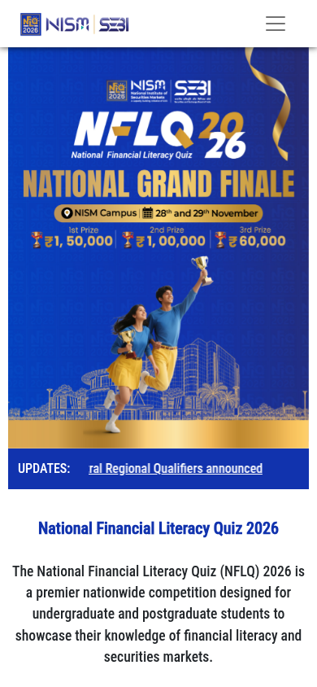

NFLQ 2026: NISM-SEBI financial literacy quiz, cash prizes up to Rs 1.5 lakh for college students
The National Financial Literacy Quiz (NFLQ) 2026, run by NISM with SEBI, is open for undergraduate and postgraduate students across India. The online round is live now. Cash prizes go up to Rs 1.5 lakh for the national winners in each category, with separate prizes for UG and PG students, and no participation fee.

Official publisher artwork hosted by its publisher. Official source. Independent guide, not affiliated or sponsored. Artwork and trademarks belong to their owners.
Prizes (UG and PG separately)
- National Grand Finale: 1st Rs 1,50,000, 2nd Rs 1,00,000, 3rd Rs 60,000
- Regional rounds: 1st Rs 40,000, 2nd Rs 30,000, 3rd Rs 20,000
- College Round: prizes worth up to Rs 15 lakh in total
- Participation certificates at all rounds
How it runs
- Round 1 - online quiz: 40 multiple-choice questions in 45 minutes, no negative marking, one attempt per person
- College Round: conducted inside campuses; this round is mandatory to progress further
- Regional rounds in six zones - East, West, North, South, Central and North-East
- National Grand Finale at the NISM campus, Patalganga, near Navi Mumbai
Who can take part
- Students who have finished 10+2 and are enrolled in any UG or PG course at a recognised Indian college or university
- UG and PG students compete in separate categories
- Part-time and distance education students are not eligible
- Past regional and national winners of NISM quizzes are not eligible
Status update: registration is closed
Checked 19 October 2026: the official NFLQ portal no longer offers registration - the College Round prize winners have been announced and regional qualifiers (for example, the South Regional Qualifiers) are being announced. The National Grand Finale is at the NISM Campus on 28-29 November 2026. New entries are no longer possible; this guide is kept for participants following the remaining rounds and for future editions.

How registration worked
- Colleges registered on nflq.nism.ac.in first - college registration came before student registration.
- Students then registered on the same portal and took the online quiz.
- Colleges that wanted to join the College Round could contact NISM on 7305844844 or nflq@nism.ac.in.
We read the NISM launch note (1 January 2026), the NFLQ homepage, FAQ and About pages on 17 October 2026. The homepage confirms the online round is live now. The rules page requires a login, so detailed 2026 rules could not be read; eligibility points above are from the site's published FAQ.
Sources: NISM-SEBI launch note, NFLQ portal. Checked 17 October 2026; closure verified on the official page on 19 October 2026. This is an AiCoN explainer, not a government publication.